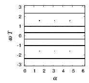
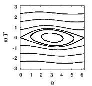
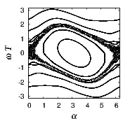
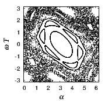
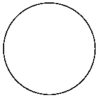
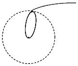

“Excellent computer simulations are done for a purpose.” Leo Kadanoff
As an example, we study the following simple physical system. A freely rotating rod is periodically kicked, such that the effect of the kicking depends on the rod’s position; see figure 5.1. The equations for the angle α, measured from the vertical, and the angular velocity ω after each kick are
A program to iterate the above formula is only a few lines long. The angle can be restricted to the range 0 to 2π. If mod(2π) is applied to α at every iteration, it will cause a tiny bit of roundoff after each full turn (and none without a full turn), but it avoids loss of significant digits when α is large, as it will be after many full turns in the same direction.
To begin with, a few test cases are in order. This program may be too short to require validation, and maybe it is, but testing a program is usually a reflex reaction for any computational scientist with experience. For K = 0 the velocity should never change. A simple test run, ω = 0.2, 0.2, 0.2,..., confirms this. Without kicking αn+1 = αn + 2πT∕Tr, where Tr = 2π∕ω is the rotation period of the rod. Between snapshots separated by time T, the angle α changes either periodically or, when Tr∕T is not a ratio of integers, the motion is “quasi-periodic,” because the rod never returns exactly to the same position.
A second test case are the initial values α = 0 and ω = 2π∕T, that is, the rod rotates initially exactly at the kicking frequency and α should return to the same position after every kick, no matter how hard the kicking: α = 0, 0, 0,.... The program reproduces the correct behavior in cases we understand, so we can proceed to more complex situations.
For K = 0.2 the angular velocity changes quasi-periodically, as a simple plot will show. For stronger K = 1.4 the motion can be chaotic, for example α ≈ 0, 1, 3.18, 5.31, 6.27, 0.94, 3.01, 5.27, 0.05,....
| (a) | (b) |
| (c) | (d) |
Plots of ω versus α reveal more systematic information about the behavior of the solutions. Figure 5.2 shows the phase space plots for several initial values for ω and α. And since α is periodic, the (α,ω) phase space may be thought of as cylinder. For K = 0, if ω is irrational it will ultimately sweep out all values of α, which appears as horizontal straight line in the plot; if ω is a rational number there will only be a finite number of α values. Solutions that perpetually lie on a curve in phase space (or, in higher dimensions, a surface) are called “integrable”. Without perturbation all of the solutions are integrable.
For small K, there is a small perturbation of the unforced behavior, with many integrable orbits (b). When the rod starts out slow and near the stable position α = π, it will perpetually remain near the stable position, while for high initial speeds the rod will take full turns forever at (quasi)periodically changing velocities. These numerical results suggest, but do not prove, that the motion, at least for the few initial values plotted here, remains perpetually regular, because they lie on an invariant curve.
The behavior for stronger K is shown in panel (c). For some initial conditions the rod bounces back and forth; others make it go around without ever changing direction. The two regions are separated by a layer where the motion is chaotic. The rod can go around several times in the same direction, and then reverse its sense of rotation. The motion of the rod is perpetually irregular. The phase plot also reveals that this chaotic motion is bounded in energy.
For strong kicking there is a “sea” of chaos (d). Although the motion is erratic for many initial conditions, the chaotic motion does not cover all possible combinations of velocities and angles. We see intricate structures in this plot. Simple equations can have complicated solutions, and although complicated they still have structure to them. A qualitative difference between (c) and (d) is that in (d) the chaotic motions are no longer bounded in energy.
And, by the way, the rod can accumulate energy without limit. In the figure, ω is renormalized to keep it in the range -π∕T to π∕T. Physicist Enrico Fermi used a similar model to show that electrically charged particles can acquire large amounts of energy from a driving field. Unbounded growth of kinetic energy due to periodic forcing is thus also known as “Fermi acceleration”.
The kicked rotator is a mechanical system without friction, so it is a Hamiltonian system, and the pair of canonical variables (α,ω) forms a phase space. The map is known as the (Chirikov) “standard map” of chaotic Hamiltonian dynamics. It has the smallest number of variables possible for a Hamiltonian system (two) and simple functional dependencies. Although it may be a bit of a toy system, lessons drawn from studying its phase space structure apply to an extraordinarily wide range of Hamiltonian systems.
Kolmogorov-Arnold-Moser (KAM) theory is concerned with the stability of motions in Hamiltonian systems under small perturbations. It answers whether or not a small perturbation of a conservative dynamical system results in a lasting quasiperiodic motion, and it gives conditions under which chaos is restricted.
KAM theorem: For a small perturbation of an integrable Hamiltonian system, invariant surfaces in phase space continue to exist for most initial conditions.
This is seen to be the case in Fig. 5.2b. For larger perturbations, Fig. 5.2c, the fraction of non-integrable solutions has grown. Some of the invariant curves are deformed and survive, while others are destroyed. KAM curves are deformed but remain impenetrable. Beyond a certain perturbation strength, this barrier breaks down (Fig. 5.2d).
A physical example are the Kirkwood gaps in the asteroid belt, that have been emptied due to gravitational interaction with Jupiter, while most asteroids revolve in stable orbits.
The motion of two bodies due to their mutual gravitational attraction leads to orbits with the shape of circles, ellipses, parabolas, or hyperbolas. For three bodies an analytic solution is no longer possible (“three-body problem”). Nothing keeps us from exploring gravitational interaction numerically. For example, we might want to know the fraction of comets, coming in from far away, that will be trapped into an orbit around the sun due to interaction with Jupiter, the heaviest planet in our solar system. This could be estimated based on theory, so it is no a great example, but the goal here is to get a perspective of the overall process. In fact, the problem will only be outlined, so we can quickly move from step to step.
1. Cast and simplify equations: The acceleration of the bodies due to their gravitational interaction is given by d2r i∕dt2 = G∑ j≠imj(ri - rj)∕(ri - rj)3, where G is the gravitational constant, the sum is over all bodies, and m and r(t) are their masses and positions. The motion of the center of mass can be subtracted from the initial conditions, so that all bodies revolve relative to the center of mass at a reduced mass. This reduces the number of equations from 9 to 6.
2. What capabilities does a numerical ODE solver need to have for this task? The numerical task is to integrate a system of ordinary differential equations (ODEs) that describe the positions and velocities of the bodies as a function of time. Since the velocities can vary tremendously over time, an adaptive time step is a necessity, otherwise the time integration would have to use the smallest tilmestep throughout.
The masses and radii in units of kilograms and meters are large numbers, hence we might want to worry about overflow in intermediate results. For example, the mass of the sun is 2 × 1030kg and the body starts from many times the Earth-sun distance of 1.5 × 1011m. We cannot be sure of the sequence in which the operations are carried out. If G∕r3, the worst possible combination, is formed first, the exponent of a single precision variable (-38) would underflow. Double precision representation is save (-308). In summary, this problem demands an ODE solver with variable step size and double precision. A standard 4th order Runge-Kutta method should do.
3. Implementation: A general-purpose software package is easily capable of solving a system of ODEs of this kind. Or, in combination with a lower-level language, pre-written routines for ODE integration can be found. The next chapter will provide a list of available repositories.
4. Test: As a first test, for the two-body problem, we can choose the initial velocity for a circular orbit. The resulting trajectory is plotted in figure 5.3(a) and is indeed circular. In fact, in this plot the trajectory goes around in a circular orbit one hundred times, but the accuracy of the calculation and the plotting are so high that it appears to be a single circle. A convenient test for the three-body problem is an equilateral triangle (stable Lagrange points).
(a) (b)
5. Answer research question: After these steps, we are prepared to answer the original question. Figure 5.3(b) shows an example of a three-body motion, where one body from far away comes in and is deflected by the orbiting planet such that it begins to orbit the sun. Its initial conditions are such that without the influence of the planet the object would escape to infinity. Jupiter has captured numerous comets in this manner.
6. Now comes the step that is so characteristic of everyday scientific computing: We will want to change up the question. For example, how does adding Saturn change the result? Or does the small initial velocity of the far-away object matter? Typically this leads to numerous iterations of implementation, validation, and exploration, without a program that is ever final, only the conclusion we draw ought to be.